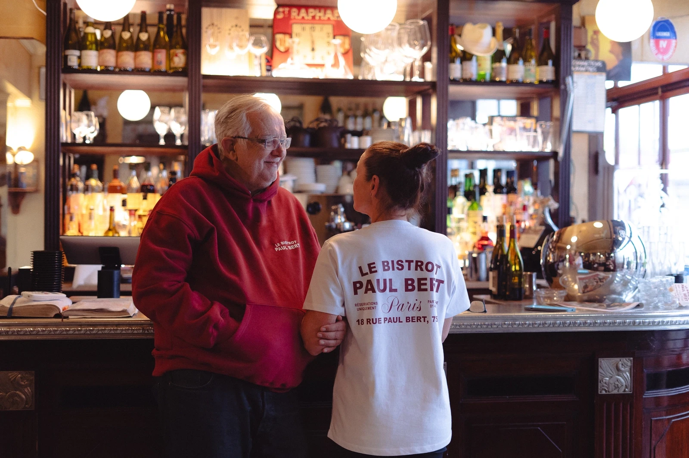
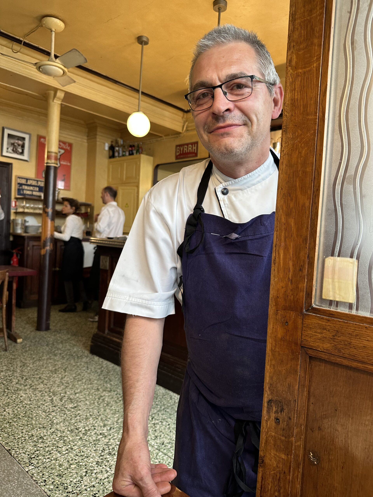
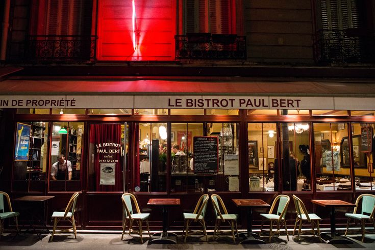
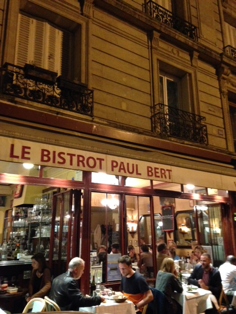

LE BISTRO DE PAUL BERT
“Comment saisir le bistrot dans son essence, son élan, sa vigueur ? …”
François Simon, Critique culinaire et Épicurien.
Situé en plein cœur du 11ᵉ arrondissement à Paris, au 18 rue Paul-Bert, le Bistrot Paul Bert a été fondé à la fin des années 1990 par Bertrand Auboyneau et Gwénaëlle Cadoret. Le pari ? Redonner au bistrot sa noblesse : cuisine de tradition, ambiance chaleureuse, service sincère.
Ici les classiques sont sublimés : la fameuse côte de bœuf à partager, le steak au poivre accompagné de frites maison, le soufflé au Grand Marnier ou l’Île flottante aux pralines roses. Chaque plat est réalisé avec soin, dans l’esprit du « bien manger », généreux et sans prétention.
Le décor est typiquement parisien : banquettes en cuir, ardoises au mur, clientèle mixte de locaux et de visiteurs. En témoigne la réputation de l’établissement : simple à comprendre, mais parfois difficile à réserver…
-

Le propriétaire : Bertrand Auboyneau. Ancien financier, il change de cap après 20 ans et décide de créer un lieu convivial où la cuisine traditionnelle du bistrot rencontre l’envie de bien faire.
-

La salle : animée, accueillante, typique d’un bistrot parisien authentique. On y vient pour un repas simple mais mémorable.
-

L’ambiance : les convives partagent la table, dégustent un bon vin, parlent fort, rient, vivent. Le lieu ne se veut pas guindé, mais sincère.